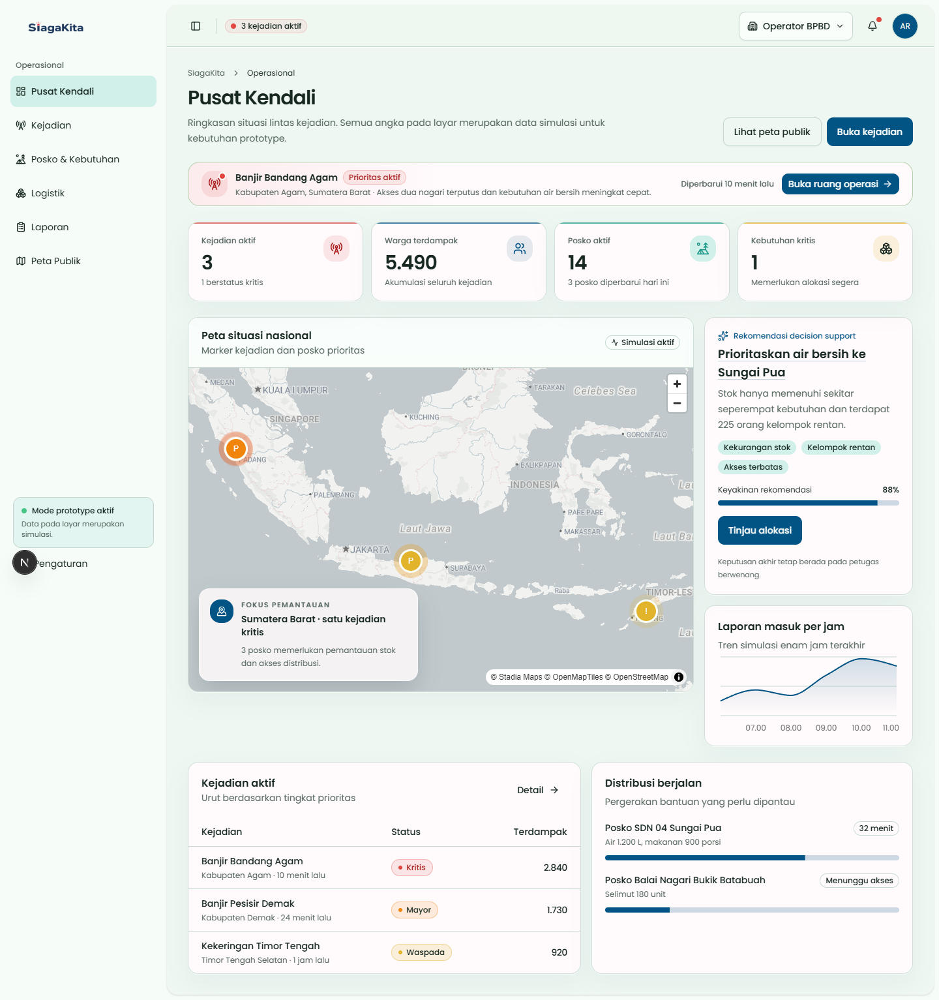
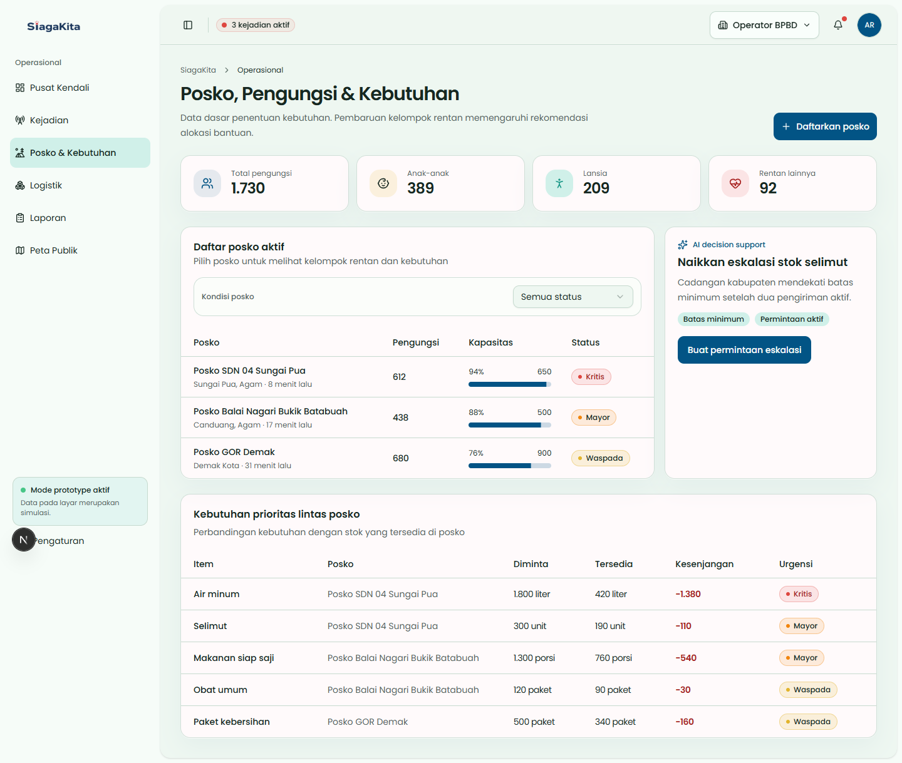
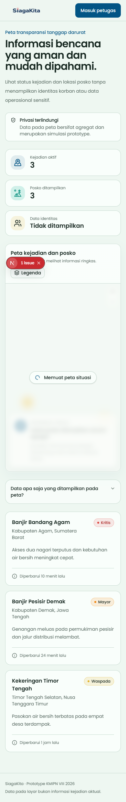
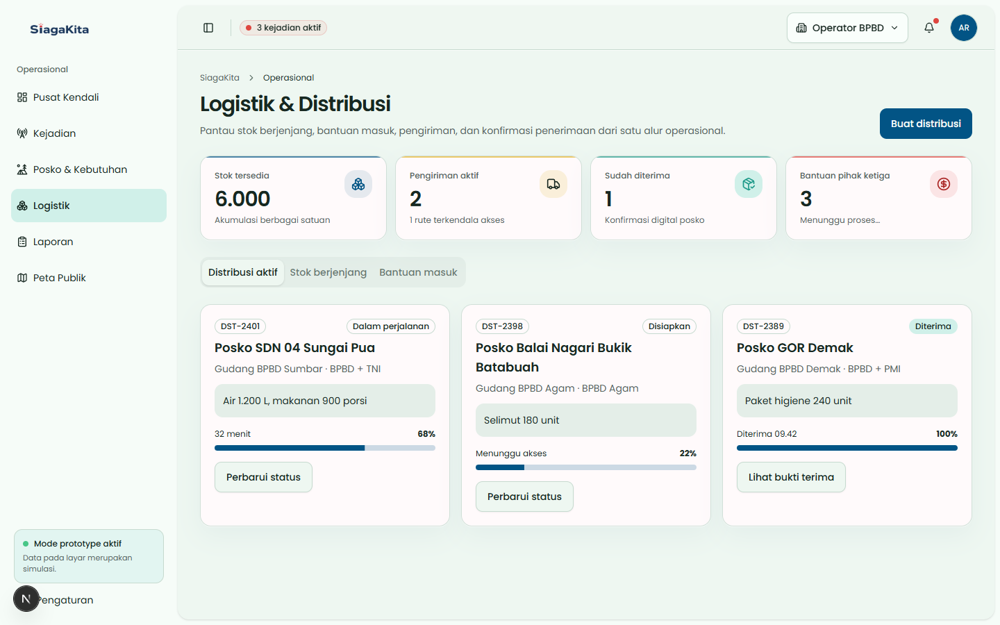

Kementerian Pendidikan, Kebudayaan, Riset, & Teknologi
Politeknik Negeri Padang
Jurusan Teknologi Informasi · Prodi D4 Manajemen Informatika
Kategori E-Government
Politeknik Negeri Ujung Pandang · 2026

SiagaKita: Platform E-Government Tanggap Darurat Bencana & Distribusi Bantuan Terpadu Berbasis Spasial

Ahsan Ramadan (Ketua · 2411081002) · Jeli Mayora (2411081012) · Aprilla Maulida (2411083002)
Dosen Pembimbing
Fazrol Rozi, B.Sc. (Hons)., M.Sc.
Politeknik Negeri Padang
Kondisi Aktual, Data Empiris & Urgensi Permasalahan
92.4%
Dominasi Bencana Hidrometeorologi Basah
Kecepatan penanganan pada 72 Jam Pertama (Golden Hours) menentukan keselamatan jiwa, namun terhambat laporan manual yang terlambat dan terfragmentasi.
2.500+
Desa Rawan Belum Terkoneksi Internet Stabil
Infrastruktur listrik & data sering lumpuh total saat bencana. Sistem yang 100% berbasis internet tidak dapat beroperasi di zona terisolasi.
68%
Kesenjangan Alokasi (Supply Mismatch)
Terjadi penumpukan bantuan di satu titik, sementara kebutuhan vital kelompok rentan di posko terpencil tidak terdata secara presisi.
Arsitektur Ekosistem E-Government (G2C · G2G · G2E)
Portal Keselamatan Publik
Akses peta evakuasi terdekat, status wilayah aman, kontak darurat, dan pelaporan dua arah (Web & SMS).
Zero PII Leak
Pusat Kendali Tanggap Krisis
Pemantauan spasial terpadu, triage laporan warga, eskalasi insiden, dan integrasi lintas lembaga (SAR, TNI, Pemda).
Eskalasi Cepat & Validasi Spasial
Manajemen Posko & Rentan
Pendataan digital pengungsi, bayi, lansia, disabilitas, serta kalkulasi otomatis pemenuhan kebutuhan dasar posko.
Standar Perka BNPB No. 18/2014
Distribusi & Audit Trail
Penyaluran dari gudang ke posko dengan manifest digital, verifikasi penerimaan, dan transparansi publik.
Keterlacakan 100% Akuntabel
Tiga Inovasi & Diferensiasi Teknologi Unggulan
Zero-Grid SMS Reporting
Mekanisme pelaporan alternatif saat jaringan internet padam. Parser cerdas format teks terstruktur:
Otomatis terkonversi menjadi titik insiden spasial pada peta kendali BPBD via webhook gateway.
AI Decision Support Engine
Menganalisis rasio keterdesakan posko berdasarkan demografi pengungsi, jarak pasokan, dan stok kritis:
Memberikan rekomendasi urutan alokasi bantuan secara objektif tanpa mengambil alih otoritas komandan operasi.
Kalkulasi Standar BNPB & SPHERE
Menghitung kuantitas beras, air bersih, sanitasi, dan gizi balita berbasis regulasi resmi:
Dilengkapi immutable audit trail untuk menjamin akuntabilitas penyaluran bantuan pemerintah.
Implementasi Prototipe Fungsional SiagaKita



Fitur Utama Masyarakat:
- Deteksi titik posko & rute evakuasi aman
- Pelaporan darurat instan berbasis koordinat
- Informasi agregat tanpa membuka data korban

Kemanfaatan Nyata, Efisiensi & Kesiapan Integrasi SPBE
Efisiensi Respon
75%
Waktu Validasi Terpangkas
Menghilangkan verifikasi manual bertingkat saat fase tanggap darurat.
Akurasi Distribusi
0%
Stok Bantuan Mismatch
Kebutuhan logistik dihitung otomatis berbasis populasi riil pengungsi.
Ketahanan Wilayah
100%
Ketercakupan Laporan
Jaminan penerimaan laporan saat infrastruktur internet putus total.
Standarisasi Nasional
SPBE
Satu Data Indonesia
Arsitektur API-first siap dihubungkan ke portal BPBD & Satu Data Bencana.